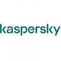
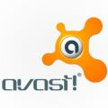

Персональный антифишинг – это программы для защиты от фишинга. Принцип работы антифишинга состоит в оповещении пользователя о том, что он попал на подложный или подозрительный сайт, созданный специально для сбора логинов и паролей к платежным системам, веб-банкингам
Антифишинговые продукты блокируют ссылки на сомнительные сайты в социальных сетях, запрещают вход на фишинговые страницы. Функция антифишинга определяет подлинность сайта, чем обеспечивает безопасное выполнение платежей
Trend Micro Internet Security
Trend Micro Internet Security - комплексный продукт для расширенной защиты домашних пользователей от онлайн-угроз . Он создает многоуровневую систему безопасности, удаляет все обнаруженные в системе угрозы и помогает защитить ее от заражения в будущем , используя технологию машинного обучения XGen. Безопасность пользовательских файлов от троянов-вымогателей и шифровальщиков обеспечивается с помощью Folder Shield, что позволяет только разрешенным приложениям получать доступ к защищенным папкам и USB-накопителям , при этом программное обеспечение Trend Micro поддерживает безопасное резервное копирование файлов, находящихся в защищенных папках, и гарантирует безопасность синхронизированных с облаком папок : Dropbox, Google Drive и Microsoft OneDrive. Также программа включает в себя такие функции как улучшение настроек конфиденциальности в социальных сетях и веб-браузерах, блокировка опасных веб-сайтов, обнаружение фишинговых атак в нежелательных почтовых сообщениях , оптимизация быстродействия системы и другое .
Защита и конфиденциальность данных пользователей в социальных сетях Facebook, Google+, Twitter, LinkedIn
Блокировка вредоносных веб-сайтов Контроль безопасности детей в Интернете Продвинутая технология защиты от вымогателей Защита от фишинга и кражи личных данных

Kaspersky Internet Security
Kaspersky Internet Security - комплексная антивирусная защита компании Kaspersky, совместимая с Microsoft Windows, macOS и Android. Продукт обеспечивает конфиденциальность пользовательских данных и общения, блокируя сбор информации о
пользователе в интернете, запускает браузер Safe Money на компьютерах для безопасного совершения интернет-покупок и онлайн-банкинга . Kaspersky Internet Security защищает от вирусов, шифровальщиков, шпионских программ, фишинга, опасных веб-сайтов, сетевых атак, спама, баннерной рекламы и других онлайн-угроз .
Также в состав продукта входит защита ввода данных, которая предотвращает утечку персональной информации, сетевой экран , защита файловой системы компьютера и режим запуска только доверенных программ. Компонент мониторинг активности блокирует вредоносные программы, в том числе эксплойты , программы блокировки экрана, шифровальщиков и троянов-вымогателей . Для защищенного интернет-соединения используется подключение к Wi-Fi с помощью соединения VPN.
Конфиденциальность и защита общения Файловый антивирус;
Безопасные платежи;
Защита ввода данных;
Защита детей в интернете;
Безопасное соединение (VPN);
Веб-антивирус Антифишинг;
Мониторинг активности о действиях программ на компьютере

Avast Internet Security
Avast Internet Security - комплексный антивирус для домашнего использования, который предлагает все необходимое для защиты ваших компьютеров и всей домашней сети, веб-серфинга и персональных данных. Avast Internet Security поставляется вместе в безопасным браузером Safe Zone. Заблокируйте навязчивую рекламу с помощью Блокировщика рекламы, воспользуйтесь Загрузчиком видео для просмотра любимых видео в режиме оффлайн, совершайте покупки или банковские операции онлайн с помощью Режима безопасных платежей, который изолирует проц
есс браузера от основной системы.
Антивирусные комплексы (Internet Security) Защита персональных компьютеров Безопасные браузеры
Блокировка рекламы
Менеджеры паролей
Персональные межсетевые экраны
Средства поиска уязвимостей